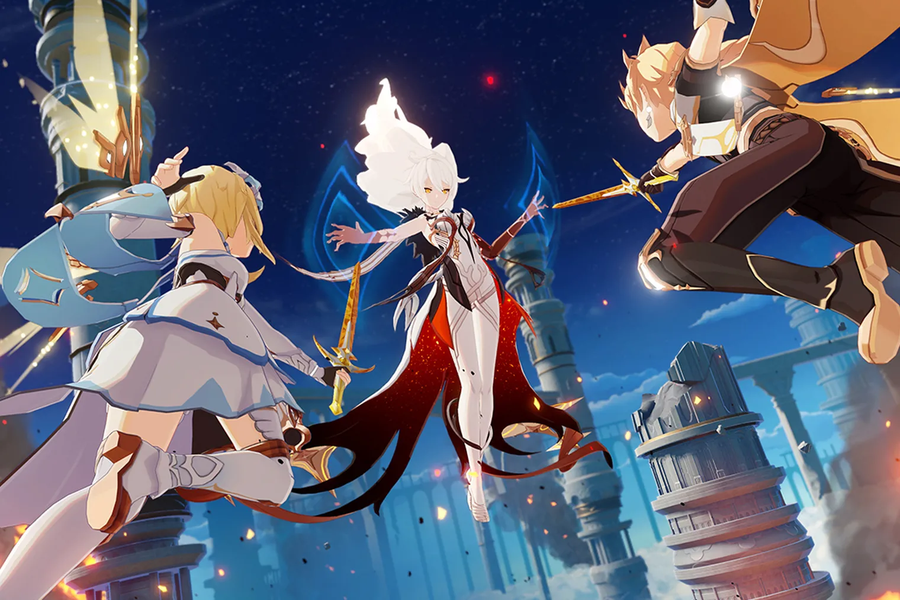
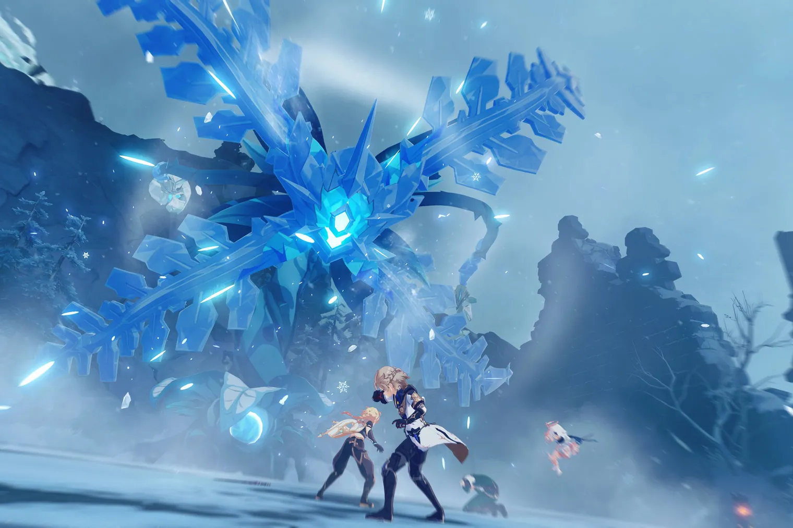

The "Aloy's Exploration Journal" Web Event has begun
Date Posted Oct 13, 2021
Aloy's Exploration Journal When Aloy sets foot on Teyvat, what kind of adventure will this Savior from Another World experience? Dear Traveler, please open "Aloy's Exploration Journal" to start the adventure!


Genshin Impact EP - He Who Wanders Untrammeled
Date Posted Oct 13, 2021
As he wandered through the streets and alleyways lined by cherry blossom trees, a rare and pensive thought came to the young martial artist's mind. The answer he seeks lies in both the fierce momentum of battles and the journey awaiting him.
"Into the Perilous Labyrinth of Fog" Version 2.2 Update Details
Date Posted Oct 13, 2021
Dear Travelers, Below are the details of the Version 2.2 update "Into the Perilous Labyrinth of Fog" and the update compensation.
